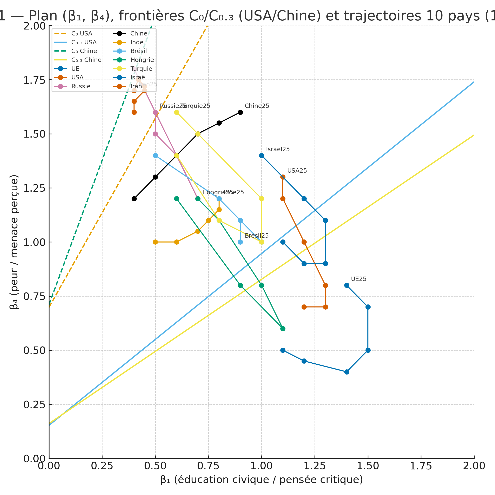
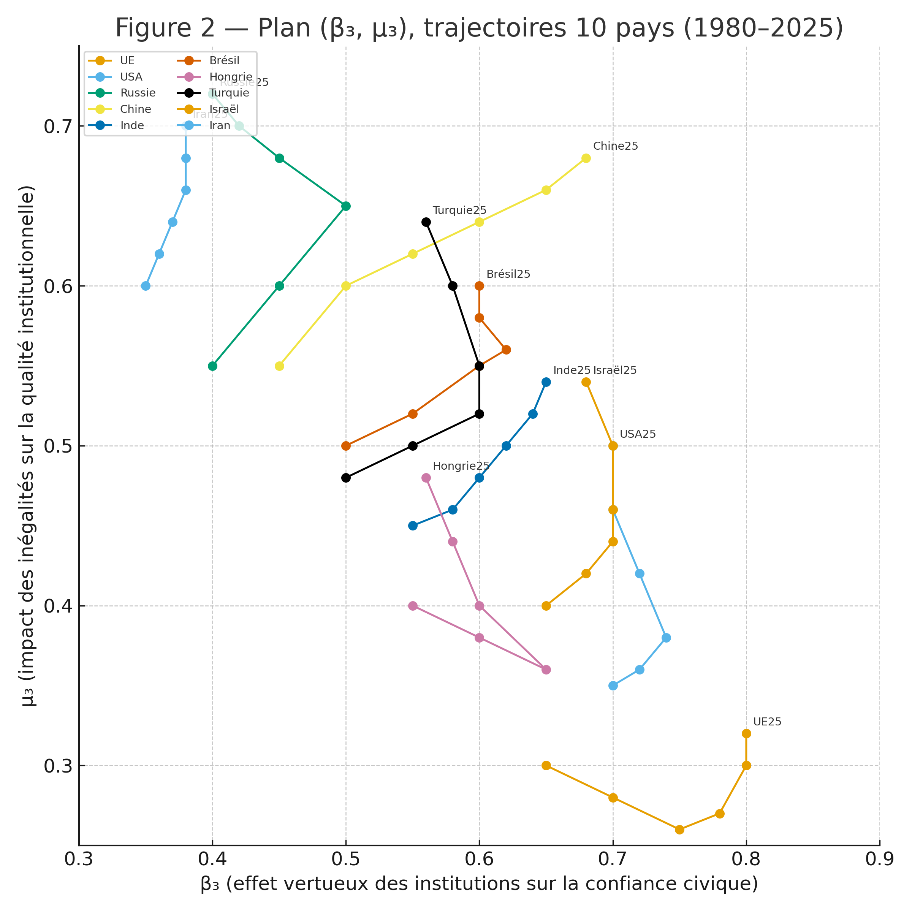
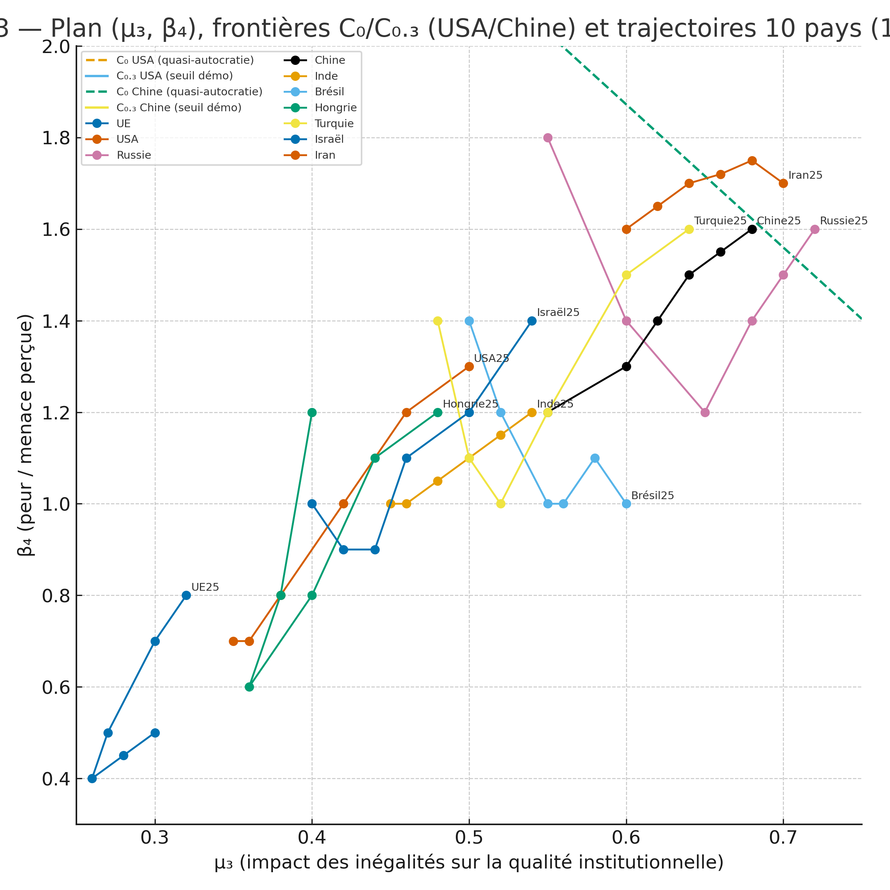
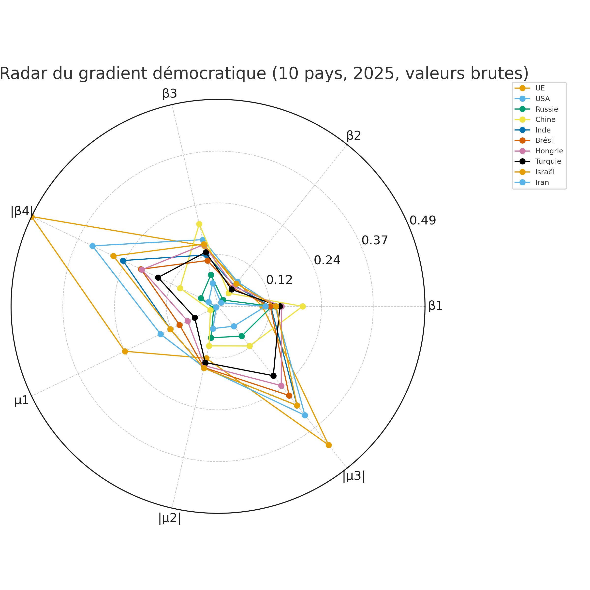

La géométrie des trajectoires démocratiques (1980–2025) Gradient civique et institutionnel, cartes de phase et radar des leviers
1. Introduction : d’une photographie de la démocratie à sa dynamique
Les indices globaux de démocratie (Freedom House, V-Dem, etc.) fournissent une photographie
de la situation politique d’un pays à un instant donné. Ils répondent à la question :
« À quel point ce pays est-il démocratique ? ». En revanche, ils renseignent peu sur la
direction et la vitesse d’évolution : pourquoi certaines démocraties se renforcent,
d’autres se fragilisent ou basculent, et pourquoi des autocraties restent remarquablement stables.
L’objectif de ce texte est de proposer un modèle dynamique minimal permettant de caractériser
non seulement le niveau de démocratie, mais aussi sa pente : c’est-à-dire le
« gradient démocratique ». Ce gradient mesure comment la démocratie effective évoluerait si
l’on modifiait marginalement certains leviers : éducation civique, qualité des institutions,
inégalités, peur, propagande, etc.
Quatre figures accompagnent ce modèle :
Figure 1 : carte de phase dans le plan $(\beta_1, \beta_4)$ avec frontières analytiques $C_0$ et $C_{0.3}$ pour les États-Unis et la Chine, et trajectoires de 10 pays entre 1980 et 2025 ;
Figure 2 : trajectoires des mêmes pays dans le plan $(\beta_3, \mu_3)$ (institutions vertueuses vs inégalités) ;
Figure 3 : trajectoires dans le plan $(\mu_3, \beta_4)$ (inégalités vs peur), avec de nouvelles frontières $C_0$ / $C_{0.3}$ calculées dans ce plan pour les États-Unis et la Chine ;
Figure 4 : radar à 7 axes représentant le gradient démocratique de 10 pays en 2025.
2. Deux variables fondamentales : citoyens et institutions
Nous modélisons la dynamique démocratique autour de deux variables continues :
Adhésion civique $\alpha(t) \in [0,1]$ :
fraction de citoyens socialisés à la culture démocratique, dotés de compétences critiques
et relativement résistants aux narratifs de peur et de division.
Qualité institutionnelle $Q(t) \in [0,1]$ :
robustesse de l’État de droit, indépendance de la justice, qualité de l’administration,
équilibre des pouvoirs et capacité des institutions à jouer leur rôle.
Nous définissons alors la démocratie effective comme le produit :
\[
\Psi(t) = \alpha(t)\, Q(t).
\]
Cette définition reflète l’idée qu’une société ne peut être durablement démocratique
ni avec de bons citoyens sans institutions solides, ni avec de bonnes institutions
mais un corps civique polarisé et manipulable.
$\beta_1$ : intensité de l’éducation civique et de l’accès à des médias et savoirs de qualité ;
$\beta_2$ : capacité à gérer la vulnérabilité sociale interne (précarité, tensions communautaires, etc.) ;
$\beta_3$ : effet vertueux des institutions de qualité sur la confiance civique ;
$\beta_4$ : intensité de la peur, menace perçue, propagande anxiogène, polarisation (effet négatif) ;
$e$ : efficacité pédagogique ; $s$ : niveau de « stress » socio-économique ; $\zeta$ : sensibilité à la peur.
Les facteurs $(1-\alpha)$ et $\alpha(1-\alpha)$ représentent des effets de saturation :
les leviers ne produisent pas le même effet selon que la culture démocratique est très faible,
intermédiaire ou déjà très élevée.
$\beta_1, \beta_2, \beta_3, \mu_1$ sont des leviers constructifs (leur augmentation augmente la pente démocratique) ;
$\beta_4, \mu_2, \mu_3$ sont des leviers destructeurs (leur augmentation diminue la pente démocratique).
Le gradient démocratique à un instant donné est donc un vecteur à 7 composantes
qui décrit le « cocktail optimal » pour accélérer la démocratisation.
5. Figures 1 et 2 : cartes de phase dans $(\beta_1,\beta_4)$ et $(\beta_3,\mu_3)$
5.1. Figure 1 — Plan $(\beta_1, \beta_4)$, frontières $C_0$ / $C_{0.3}$ et trajectoires 10 pays

Figure 1. Plan $(\beta_1, \beta_4)$ : éducation civique / pensée critique (abscisse)
vs peur / menace perçue (ordonnée). Les droites $C_0$ et $C_{0.3}$ sont tracées pour les États-Unis
et la Chine (frontières issues d’une linéarisation dans ce plan). Les trajectoires de 10 pays
sont représentées pour les années 1980, 1990, 2000, 2010, 2020 et 2025.
Cette figure montre comment, pour des paramètres macro-institutionnels donnés, les combinaisons
$(\beta_1,\beta_4)$ se répartissent en zones de stabilité démocratique, instabilité et stabilité autoritaire.
Les trajectoires décadaires illustrent la dérive de certains pays vers des zones de plus forte peur
et de plus faible robustesse démocratique.
5.2. Figure 2 — Plan $(\beta_3, \mu_3)$, institutions vs inégalités

Figure 2. Plan $(\beta_3, \mu_3)$ : effet vertueux des institutions sur la confiance civique
vs impact des inégalités structurelles sur la qualité institutionnelle. Trajectoires décadaires
(1980–2025) pour les 10 pays étudiés.
Cette carte de phase met en évidence le rôle central des inégalités ($\mu_3$) comme frein institutionnel :
les pays riches et relativement égalitaires (UE) évoluent dans une zone $\mu_3$ modérée, alors que d’autres
(États-Unis, Brésil, Inde) se déplacent vers des valeurs plus élevées de $\mu_3$ malgré des progrès
institutionnels partiels (hausse de $\beta_3$).
6. Figure 3 : plan $(\mu_3, \beta_4)$ et frontières $C_0/C_{0.3}$ recalculées
Nous considérons maintenant le plan $(\mu_3,\beta_4)$ : inégalités structurelles vs peur / propagande anxiogène.
C’est le plan « populiste » par excellence, où se combinent les fractures sociales profondes et l’instrumentalisation
de la peur.
En regroupant les termes de $\frac{d\Psi}{dt}$ en fonction de $\mu_3$ et $\beta_4$ pour des valeurs données
de $\alpha$ et $Q$, on obtient :
Sur l’intervalle représenté $\mu_3 \in [0{,}25, 0{,}75]$ et $\beta_4 \in [0{,}3, 2]$ :
les droites $C_0$ (USA et Chine) sont largement au-dessus de 2 pour une partie du domaine ;
$C_{0.3}$ USA coupe la zone visible ;
$C_{0.3}$ Chine passe en grande partie en dessous de $\beta_4 = 0$, donc hors du graphe si l’on tronque les ordonnées à $\beta_4 \ge 0{,}3$.

Figure 3. Plan $(\mu_3, \beta_4)$ : inégalités structurelles vs peur / menace perçue.
Les trajectoires décadaires (1980–2025) des 10 pays sont représentées, ainsi que les frontières
dynamiques $C_0$ et $C_{0.3}$ recalculées analytiquement pour les États-Unis et la Chine
dans ce plan.
À partir des expressions analytiques du gradient, on peut calibrer numériquement pour 2025
les valeurs suivantes (exemple stylisé) :
pour chaque pays $P$, un vecteur
\[
\Big(
\frac{\partial(d\Psi/dt)}{\partial\beta_1},
\frac{\partial(d\Psi/dt)}{\partial\beta_2},
\frac{\partial(d\Psi/dt)}{\partial\beta_3},
\left|\frac{\partial(d\Psi/dt)}{\partial\beta_4}\right|,
\frac{\partial(d\Psi/dt)}{\partial\mu_1},
\left|\frac{\partial(d\Psi/dt)}{\partial\mu_2}\right|,
\left|\frac{\partial(d\Psi/dt)}{\partial\mu_3}\right|
\Big)_P.
\]
La Figure 4 superpose ces 10 vecteurs sous forme de radar à 7 axes :

Figure 4. Radar du gradient démocratique (10 pays, 2025, valeurs brutes).
Chaque courbe représente, pour un pays, la sensibilité de la pente démocratique
aux différents leviers : $\beta_1,\beta_2,\beta_3,|\beta_4|,\mu_1,|\mu_2|,|\mu_3|$.
Cette figure fournit une « empreinte » des leviers prioritaires par pays :
quels paramètres augmenter (ou diminuer) pour obtenir le plus grand gain marginal
de démocratie effective.
8. Discussion et conclusion : la démocratie comme pente, pas comme état
Les quatre figures et le modèle qui les sous-tend conduisent à une idée centrale :
Ce n’est pas la valeur absolue de la démocratie qui détermine son avenir,
mais la pente locale de la trajectoire dans l’espace des phases.
Les démocraties avancées (UE) apparaissent comme relativement stables, mais menacées
par la montée de la peur ($\beta_4$) et des inégalités ($\mu_3$). Leur gradient
suggère que la priorité est de réduire ces deux vulnérabilités, tout en maintenant
éducation civique et qualité institutionnelle.
Les démocraties fragilisées ou en devenir (États-Unis, Israël, Inde, Brésil, Hongrie, Turquie)
partagent un même cocktail optimal : réduire la peur, la captation institutionnelle
et les inégalités ($\beta_4, \mu_2, \mu_3$) tout en renforçant $\beta_1, \beta_3, \mu_1$.
Elles diffèrent principalement par leur point de départ dans le paysage dynamique.
Les autocraties consolidées (Chine, Russie, Iran) se trouvent dans des « vallées »
où la pente démocratique est très faible : même un investissement important dans
les leviers positifs produit un gain marginal limité, tant que les paramètres
structurels restent défavorables. La Chine constitue un cas particulier où le couple
institutions fortes / esprit critique ($\beta_3$ et $\beta_1$) pourrait, à terme,
ouvrir une trajectoire de modernisation politique spécifique, différente des modèles
occidentaux sans leur être nécessairement inférieure en termes de qualité de gouvernance.
Le langage du gradient démocratique et les cartes de phase associées offrent ainsi
une géométrie intelligible des trajectoires politiques contemporaines : une manière
de passer d’un classement statique des régimes à une description dynamique des
directions possibles et des pentes sur lesquelles se trouvent les sociétés.